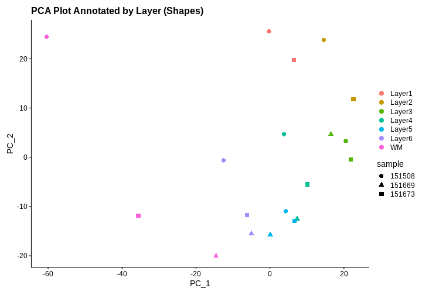

Image 1 of 1: ‘A cross-section of human skeletal muscle showing muscle cells and a nerve nearby. Stained with hematoxylin and eosin.’
A cross-section of skeletal muscle tissue
showing muscle cells and a small nerve.
Figure 2
Image 1 of 1: ‘alt text for accessibility purposes’
Signaling between adjacent cells. The Notch
protein functions as a receptor for ligands that activate or inhibit
such receptors. Receptor-ligand interactions ground cell signaling and
communication, often requiring close proximity between cells.
Figure 3
Image 1 of 1: ‘a general schematic showing fluorescence in situ hybridization’
Overview of fluorescence in situ hybridization
(FISH).
Figure 4
Image 1 of 1: ‘alt text for accessibility purposes’
Schematic representation of multiplexed
error-robust FISH (MERFISH). Binary codes assigned to mRNA species of
interest, where “1” represents a short fluorescent DNA probe. b,
Consecutive hybridization rounds, bleaching in between is implied, but
not shown for clarity. At the end of the sixth round, it is possible to
tell different mRNAs apart due to the decoded combinations of “1” and
“0”.
Figure 5
Image 1 of 1: ‘a general schematic showing in situ sequencing’
Image 1 of 1: ‘A graphic showing printed spots on a glass slide that are identified by a barcode and that contain primers to capture mRNA from the tissue laid on top of them’
A sequencing-based spatial transcriptomics
method using printed spots on a slide.
Figure 9
Image 1 of 1: ‘a general schematic showing the Visium technology’
Overview of Visium technology with fresh-frozen
(FF) or formalin-fixed paraffin embedded (FFPE) tissue. Source: 10x Genomics
Visium
Image 1 of 1: ‘A graphic showing printed spots on a glass slide that are identified by a barcode and that contain oligonucleotides to capture messenger RNA from the tissue laid on top of them’
Visium spatial gene expression slide
Figure 2
Image 1 of 1: ‘A Visium spatial transcriptomics workflow with fresh-frozen tissue’
Image 1 of 1: ‘A graphic showing printed spots on a glass slide that are identified by a barcode and that contain primers to capture messenger RNA from the tissue laid on top of them’
Sequencing data is mapped back to spots on the
slide and compared to an image of the tissue to localize
expression
Figure 4
Image 1 of 1: ‘An example of spatial transcriptomics data showing genes in rows and barcodes (spots) in columns’
Spatial transcriptomics data include genes in
rows and barcodes in columns
Figure 5
Image 1 of 1: ‘A human brain showing a section of dorsolateral prefrontal cortex extracted. A block of tissue containing six cortical layers and an underlying layer of white matter is excised from the section.’
Tissue blocks were excised from human
dorsolateral prefrontal cortex. Tissue blocks include six cortical
layers and underlying white matter (wm).
Figure 6
Image 1 of 1: ‘Three Visium slides showing four spatial capture areas each. Each slide contains directly adjacent serial tissue sections for one subject. The second pair of samples contains tissue sections that are 300 microns posterior to the first pair of samples.’
Image 1 of 1: ‘An experiment with treated samples on one slide and control samples on another.’
You plan to place samples of treated tissue on one slide and samples
of the controls on another slide. What will happen when it is time for
data analysis? What could you have done differently?
Figure 8
Image 1 of 1: ‘An experiment with three timepoints at 5, 10 and 15 weeks. At the end of the first 5 weeks, those samples are run through Visium. This is repeated at 10 and 15 weeks.’
Three time points in an experiment
Figure 9
Image 1 of 1: ‘Four different wheel running treatments applied to 5 mice each. Treatment 1 is applied on day 1, treatment 2 on day 2, and so on.’
Four different wheel running treatments each
applied once per day to five mice, for a total of 20 mice treated.
Figure 10
Figure 11
Image 1 of 1: ‘A normal curve with a mean of zero showing the type 1 error rate in the far right tail and specificity in the left of the curve.’
The null hypothesis states that there is no
difference between treatment groups.
Figure 12
Image 1 of 1: ‘A normal curve with a mean of approximately 3 showing the type 2 error rate in the left of the curve and sensitivity (also known as statistical power) in the far right tail of the curve. The effect size is shown as the difference in means between the null and alternative hypotheses.’
The alternative hypothesis states that there is
a difference between treatment groups.
Image 1 of 1: ‘Moran's I statistic quantifies spatial correlation.’
Moran’s I statistic quantifies spatial
correlation. Top Left: Checkerboard pattern results in
negative Moran’s I, indicating anti-correlation. Top
Right: Linear gradient shows a high positive Moran’s I,
reflecting a strong spatial gradient. Bottom Left:
Random pattern leads to a Moran’s I near zero, suggesting no significant
spatial autocorrelation. Bottom Right: ‘Ink blot’
pattern demonstrates positive autocorrelation, indicative of a clustered
or spreading pattern. Relationships are calculated using direct, equally
weighted neighbors, normalized for each cell.
Figure 5
Image 1 of 1: ‘[decorative]’

Figure 6
Image 1 of 1: ‘Genes with the lowest adjusted p-values from differential expression analysis with DESeq2’
Visium spatial gene expression slide
Figure 7
Spatial distribution of the most DE genes for
all samples


 Adapted from Spatial Transcriptomics Overview by SlifertheRyeDragon.
Image created with Biorender.com. Public domain, via Wikimedia Commons
CC
BY-SA 4.0 DEED
Adapted from Spatial Transcriptomics Overview by SlifertheRyeDragon.
Image created with Biorender.com. Public domain, via Wikimedia Commons
CC
BY-SA 4.0 DEED{kind=link}
 Adapted from Spatial Transcriptomics Overview by SlifertheRyeDragon.
Image created with Biorender.com. Public domain, via Wikimedia Commons
CC
BY-SA 4.0 DEED
Adapted from Spatial Transcriptomics Overview by SlifertheRyeDragon.
Image created with Biorender.com. Public domain, via Wikimedia Commons
CC
BY-SA 4.0 DEED Adapted from
Liu
Y, Enninful A, Deng Y, & Fan R (2020). Spatial transcriptome
sequencing of FFPE tissues at cellular level. Preprint.
CC
BY-SA 4.0 DEED
Adapted from
Liu
Y, Enninful A, Deng Y, & Fan R (2020). Spatial transcriptome
sequencing of FFPE tissues at cellular level. Preprint.
CC
BY-SA 4.0 DEED


 Graphic from
Grant
application resources for Visium products at 10X Genomics
Graphic from
Grant
application resources for Visium products at 10X Genomics


 Adapted from
Maynard et al, Nat
Neurosci 24, 425–436 (2021).
Created with BioRender.com.
Adapted from
Maynard et al, Nat
Neurosci 24, 425–436 (2021).
Created with BioRender.com.


 Zhang
et al, Comput Struct Biotechnol J 21, 176–184 (2023)
CC
BY-NC-ND 4.0
Zhang
et al, Comput Struct Biotechnol J 21, 176–184 (2023)
CC
BY-NC-ND 4.0